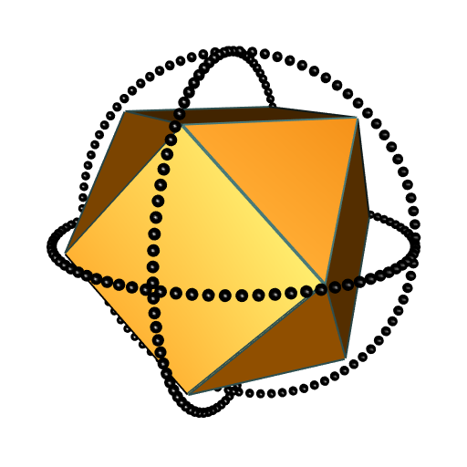
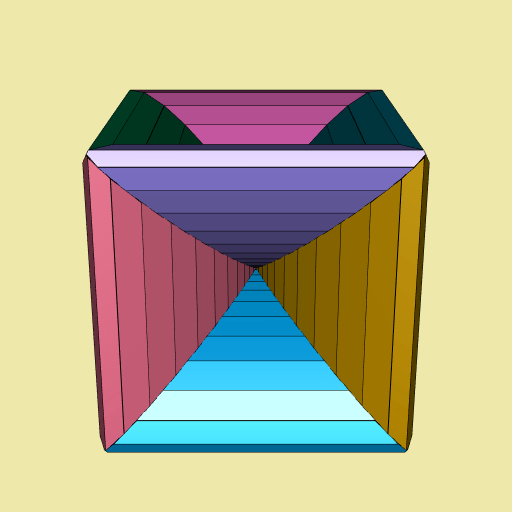

Funny 3D Voronoï diagrams
Four years ago I wrapped the C library Qhull in a Haskell package. Thanks to Qhull, this package can do some convex hulls and some Delaunay tessellations. The Qhull library also allows to do some Voronoï tessellations, but I never understood how that works. So I programmed the Voronoï tessellation in Haskell, by deriving it from the Delaunay tessellation.
Recently, I released the R package tessellation. It uses the C code of my Haskell package to contruct Delaunay tessellations, and I programmed the Voronoï tessellation in R.
I discovered something interesting with my Haskell package: take a classical polyhedron (e.g. a tetrahedron, or a cube), enclose it with two or three circles (I mean with some points on the circles), and do the Voronoï diagram of all these points (the vertices of the polyhedron and the points on the circles). Then you get a funny Voronoï diagram. You can see some examples on the website I made for the tessellation package (thanks to the pkgdown package).
Let’s make another example here. This time, I take a cuboctahedron and I enclose it with three circles:
library(rgl) # provides `cuboctahedron3d()`
cuboctahedron_vertices <- t(cuboctahedron3d()$vb[-4L, ])
xi_ <- seq(0, 2*pi, length.out = 91)[-1L]
R <- 1.5
circle1 <- t(vapply(xi_, function(xi) R*c(cos(xi), sin(xi), 0), numeric(3L)))
circle2 <- t(vapply(xi_, function(xi) R*c(cos(xi), 0, sin(xi)), numeric(3L)))
circle3 <- t(vapply(xi_, function(xi) R*c(0, cos(xi), sin(xi)), numeric(3L)))
enclosedCuboctahedron <-
rbind(cuboctahedron_vertices, circle1, circle2, circle3)Here is the picture:
open3d(windowRect = c(50, 50, 562, 562))
view3d(20, zoom = 0.65)
shade3d(cuboctahedron3d(), color = "darkorange", shininess = 10)
wire3d(cuboctahedron3d(), color = "darkslategray4", lwd = 4)
spheres3d(rbind(circle1, circle2, circle3), radius = 0.04)
Now let’s make the Voronoï diagram with the tessellation package:
library(tessellation)
del <- delaunay(enclosedCuboctahedron, degenerate = TRUE)
v <- voronoi(del)
## Voronoï diagram with twelve bounded cells.I have not checked whether the option degenerate = TRUE is necessary, but it is often necessary in order to get a correct Voronoï diagram, and I never understood why. Now let’s plot the Voronoï diagram:
library(paletteer) # provides many color palettes
open3d(windowRect = c(50, 50, 562, 562))
bg3d("palegoldenrod")
plotVoronoiDiagram(v, colors = paletteer_c("grDevices::Dark 3", 12L))I animated it. Here is the result:

This is not my favorite one (I prefer the one derived from the cube, that you can see on the tessellation website), but nevertheless it is nice.